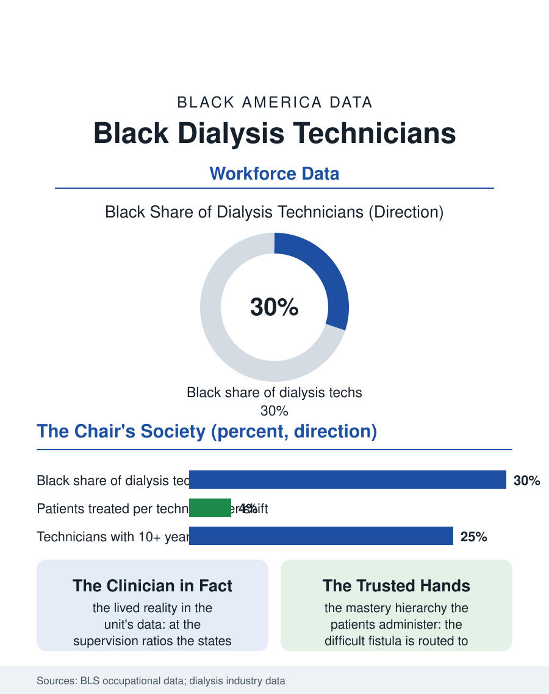

Black Employment
The Trusted Hands: Black Dialysis Technicians
The patient's actual clinician three days a week for years, in the unit that is a community institution with a medical function. The dialysis tech file.

The dialysis technician spends the working life at the chairs where the kidney file's patients sit for their twelve hours a week, and the workforce at those chairs is among the most Black in the health system, drawn from the same neighborhoods the clinics serve, in an occupation whose certification is a year or less and whose mastery is the patient's survival rendered routine. This article reads the dialysis technician file.
The Chair's Economy
The dialysis industry's structure, the two great chains and the independents of the kidney file's business chapter, employs the technician as its core labor: the cannulation, the machine's setup and monitoring, the patient's weight and pressure and access watched across the treatment's hours, under the nurse's supervision at ratios the state rules set, so that the technician is, in the clinic's lived reality, the patient's clinician, the professional whose hands and eyes the treatment actually consists of, three days a week, for years. The workforce's composition follows the clinic map's: the facilities stand where the kidney failure is, and their staffs are drawn from the surrounding neighborhoods in the concordance pattern at its most complete in the health files, the patients and the technicians sharing the bus route and the church in the pattern the ethnographies of the dialysis unit record as the unit's distinctive society, a workplace that is also a community institution with a medical function. The home dialysis file is the occupation's frontier in the current policy data, the training of the patient and the family partner to perform the treatment at the kitchen table converting the technician from the operator into the teacher and the on-call voice, a role whose trust requirements are the unit society's exported form and whose growth the payers' home-first policies are underwriting, so that the workforce's next decade will be spent increasingly in the patients' homes rather than the unit's rows, carrying the same hands and the same neighborhood knowledge through a different door. The water room, the plant whose purity the treatment's safety rests on, is the unit's own basement file, its technicians the dialysis world's sterile processing, invisible and absolute.
Skill at the Access
The craft's center is the access, the fistula whose cannulation is the treatment's daily risk and art, the veteran technician's feel for the vessel being a clinical asset the clinic's schedule is built around, the difficult access routed to the hands the whole unit trusts, a mastery hierarchy the patients themselves administer in their requests. The certification file, the national examinations and the states' training mandates, formalized the occupation across the recent decades from its on-the-job origins, and the wage, in the care band's upper reaches for the experienced, reflects the chains' competition for the reliable in a labor market whose turnover is the industry's standing cost. The emotional file is the unit's own: the technician tends the same patients for years and loses them on the mortality file's schedule, the empty chair being the occupation's grief in its most regular form, borne by a workforce whose own kidney risk profile, per the health file, matches the patients' more closely than any other workforce's in the building.
The Unit's Society
The dialysis technician file closes on the unit as a social world, because no other health setting assembles the same people, staff and patients together, for so many hours across so many years, and the Black character of that world in the American dialysis belt, its talk and its food and its funerals attended across the staff-patient line, is a social fact the health services literature records with something like awe. The occupation's ladder runs to the nurse's license and the facility's administration, its rungs used by the workforce the file counts in the pattern of the other chairs. The chains count the technicians in the tens of thousands. The file's last entry is the morning shift's first cannulation, performed by the technician whose own grandmother sat in such a chair, in the unit where the neighborhood's kidney failure comes to be survived, three days a week, at the hands of its own. The chair's schedule is the patient's week and the technician's alike, their calendars entwined by the treatment's rhythm for years at a time.
More in Black Employment
The Black Unemployment Rate: The Two-to-One Pattern
Black unemployment runs at roughly twice the White rate — 5.5 percent against 3.3 percent in annual averages — a ratio stable across five decades of federal data. How it is measured and why it persists.
Black Median Weekly Earnings: The 80-Cent Ratio
Black full-time workers earn a median of about $900 a week — roughly 80 cents for every dollar White workers earn. The BLS earnings data by group, gender, and occupation.
Black Labor Force Participation: Working at National Rates
Black labor force participation runs at roughly the national rate — and Black women participate at higher rates than White women. The BLS participation data.
Source: Bureau of Labor Statistics occupational employment data; dialysis industry workforce and CMS facility data.